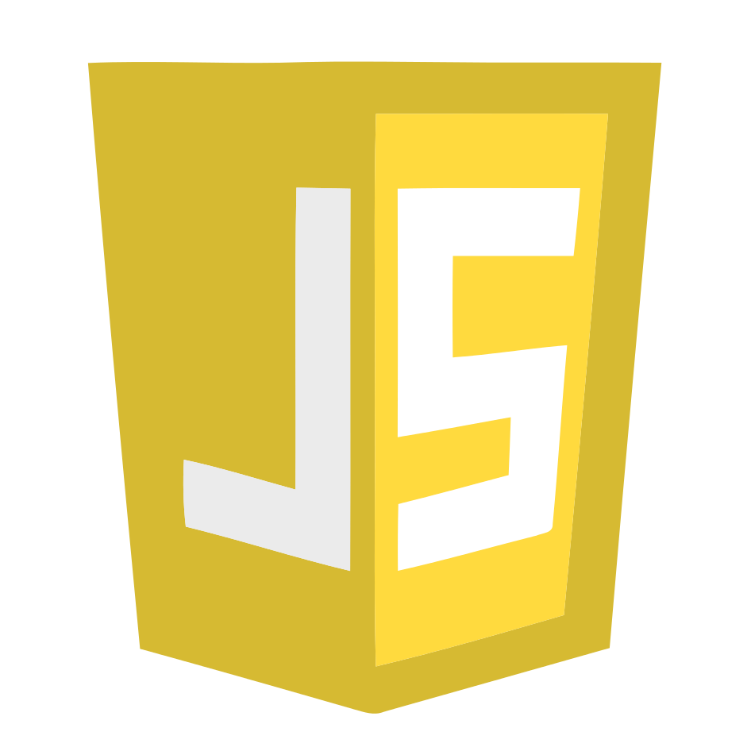

Introduction:
This webpage stands as a testament to the dedicated efforts poured into diverse projects over the years, each contributing to my professional growth and development within the realm of Information Technology. The showcased materials, from code snippets to design mockups, reflects a journey fueled by self-motivation, inspiration and commitment to sustainable learning.
Through this self-made endeavor, a personal portfolio was built meticulously curated that should backup the evolution of my abilities.
There were no other parties involved in this build-up. This is not the subject to collaborative work display, but an independent drive to push boundaries and expand my knowledge and understanding over various concepts that are relevant to my line of work.
Within these digital pages, you'll find echoes of my intellectual curiosity, the various challenges I've overcome, and the solutions I've crafted. Each project represents a stepping stone in my professional development and a testament to my dedication to continuous learning and self-improvement within the ever-evolving landscape of Information Technology.
Content:
A collection of frontend applications, videos and contextual webpages showcasing various projects, that are publicly available on GitHub, each illuminating a different facet of modern software development.
The showcased projects feature some of the most modern tools and technologies available today.
|
HTML
|
CSS
|
JavaScript  |
Angular
|
C++
|
C#
|
Java
|
Python
|
Unity
|
.NET |
|---|